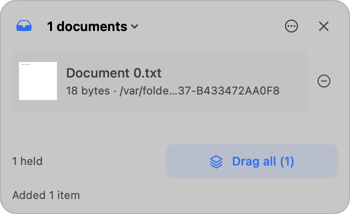
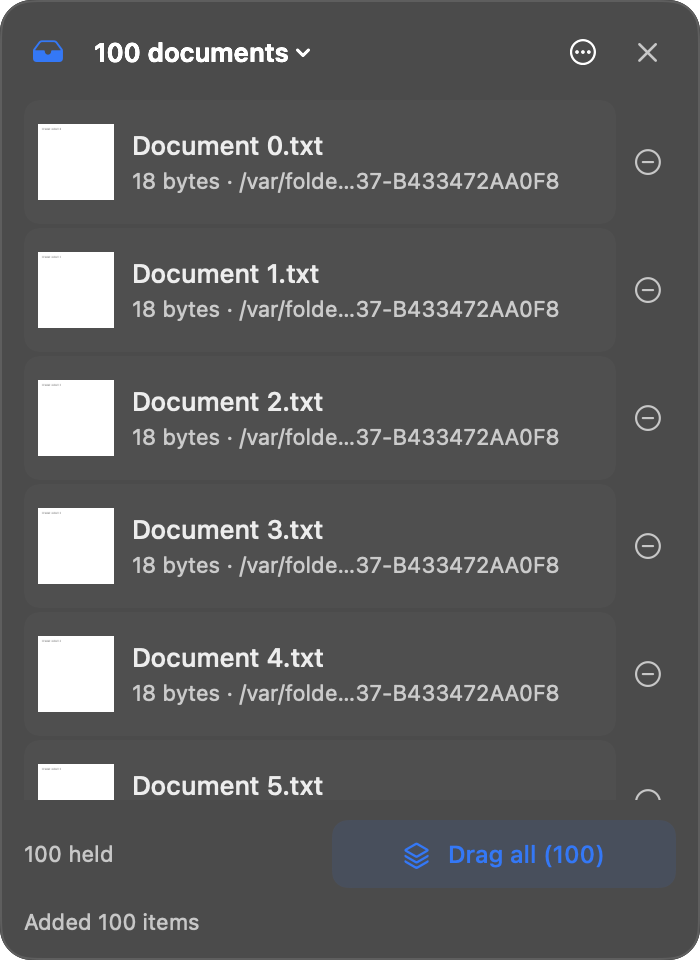
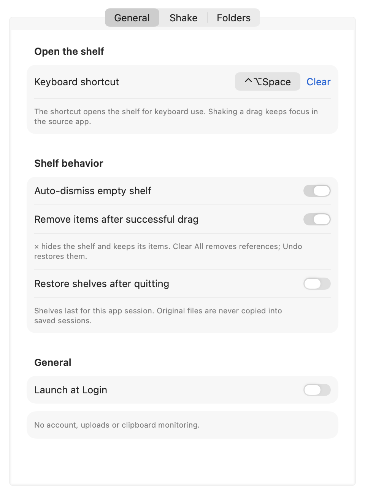
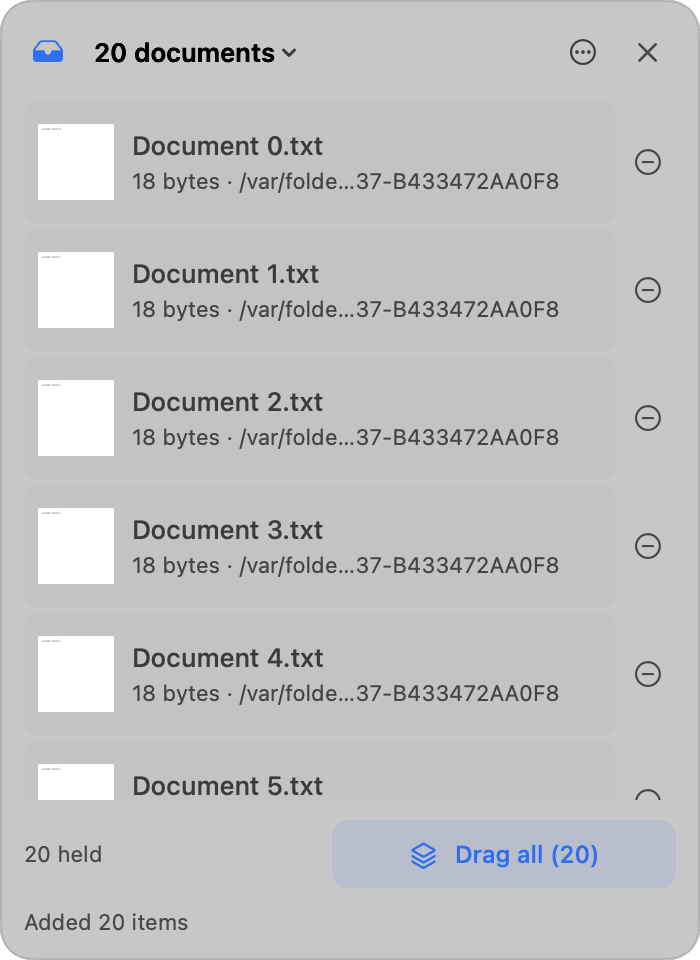

Menu bar · macOS 14+
Thả vào đây.
Kéo tiếp sau.
Khay trên menu bar. Giữ file khi đổi cửa sổ Finder.

Đang kéo file thì cửa sổ đích chưa sẵn.
Finder không giữ hộ drag. Bạn phải thả, đổi cửa sổ, rồi kéo lại. Draglet là khay tạm cho đoạn giữa đó.
Ba thao tác. Cùng một drag.
-
Kéo và lắc
Giữ chuột trên file trong Finder, lắc ngang. Hoặc Control-Option-Space.
-
Thả vào khay
Drop xong thì thả chuột. Đổi Space, app, hay cửa sổ Finder khác.
-
Kéo sang đích
Kéo một dòng, nhóm đã chọn, hoặc Drag all. App đích mới copy hay link.
Khay giữ tham chiếu, không nuốt file.
- File gốc nằm yên
- Draglet giữ URL local. Không copy, không đổi tên, không xóa. App đích mới làm copy hay link.
- Chọn nhóm rồi kéo
- Cmd-click rời, Shift-click dải. Tay nắm dưới khay kéo đúng phần đã chọn.
- Xem nhanh, mở Finder
- Space hoặc double-click để Quick Look. Chuột phải để Reveal in Finder.
- Ẩn không mất hàng
- Nút × và Escape chỉ giấu khay. Clear All nằm trong menu. Undo hoàn tác mục gỡ tay.

Phím tắt, nhiều khay, chữ và ảnh.

- Khay có tên
- Tạo, đổi tên, chuyển khay độc lập. Mỗi khay giữ undo riêng.
- Text, link, ảnh
- Kéo chữ, URL, PNG hay TIFF. Link remote giữ URL, không tải trang.
- Lưu phiên tùy chọn
- Mặc định tắt. Bật thì lưu trên máy. Tắt thì xóa bản lưu, khay đang mở vẫn còn.
Chạy trên máy bạn. Không có máy chủ của chúng tôi.
Tải Draglet 0.2.0 cho Mac.
Universal, Intel và Apple Silicon. Ký ad-hoc, chưa notarize. Lần đầu: chuột phải app, Open, rồi Open lần nữa.
Cần Xcode chỉ khi tự build. Người dùng cuối mở DMG là đủ. Launch at Login mặc định tắt.

Câu hỏi thường gặp
macOS có chặn app chưa notarize không?
Có thể. Bản local này ký ad-hoc. Chuột phải Draglet.app, chọn Open, xác nhận Open. Không dùng bản này nếu bạn cần Gatekeeper Developer ID.
Draglet có xóa hay di chuyển file gốc không?
Không. Khay giữ tham chiếu. Copy hay alias do app đích quyết định khi bạn kéo ra. Gỡ khỏi khay chỉ bỏ reference.
Lắc chuột không hiện khay thì sao?
Giữ nút chuột trên file, lắc ngang. Ô practice trong Settings chỉ tập cử chỉ. Phím tắt mặc định là Control-Option-Space.
Có bản Windows hay iPhone không?
Không. Draglet là utility macOS, menu bar, kéo thả Finder. Yêu cầu macOS 14 trở lên.